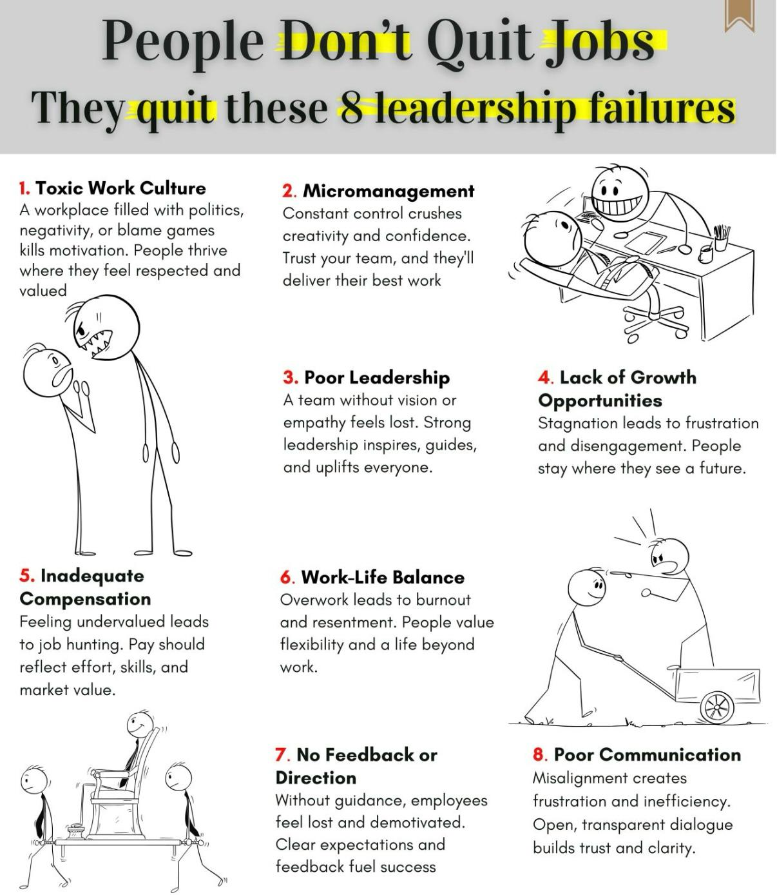

Why Unions Matter for Pilots
Strong unions empower pilots by advocating for fair treatment, safe working conditions, and balanced work-life policies.
Around the world, pilot unions have achieved significant victories that protect the rights and well-being of pilots, ensuring they are valued and heard within their companies.
Examples of Union Wins for Pilots
Improved Working Conditions
- Delta Air Lines (ALPA): Negotiated higher pay scales and improved scheduling practices, reducing pilot fatigue and promoting safety.
- Ryanair (RPG): Secured better contracts, fairer rostering, and transparent career progression paths.
- Lufthansa (VC): Enhanced pilot pensions and job security during industry crises.
Increased Compensation and Benefits
- American Airlines (APA): Achieved a 46% pay increase over four years along with enhanced benefits and retirement packages.
- Qantas (AIPA): Negotiated stable pay increments and maintained high work condition standards.
Work-Life Balance Initiatives
- Southwest Airlines (SWAPA): Advocated for flexible schedules and better rest policies to avoid burnout.
- British Airways (BALPA): Implemented predictable schedules improving work-life balance.
Safety and Operational Standards
- United Airlines (ALPA): Ensured rigorous safety protocols and effective pilot training programs.
- Air France (SNPL): Promoted mental health support and safety measures during the COVID-19 pandemic.
Global Pilot Unions and Airline Representation
| Airline |
Union |
Country |
| Delta Air Lines | ALPA | USA |
| Ryanair | RPG | Europe |
| Lufthansa | VC | Germany |
| Qantas | AIPA | Australia |
| British Airways | BALPA | UK |
| United Airlines | ALPA | USA |
How Unions Address Leadership Failures
Unions play a critical role in addressing leadership failures such as Toxic Work Culture, Micromanagement, and Lack of Growth Opportunities.

Conclusion: Standing Strong Together
When pilots unite through strong representation, they gain a powerful voice. Whether it is fighting for fair pay, safer work environments, or better work-life balance, unions play a crucial role in shaping a healthier, more rewarding profession for pilots worldwide.